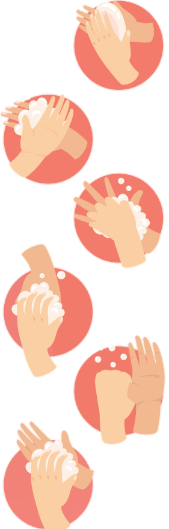

Cuci
Tangan

Basahi tangan dengan air dan sabun,gosok kedua telapak tangan
Gosok area punggung tangan
Gosok area selajari tangan
Gerakkan mengunci tangan
Gosok area jari memutar
Gosok memutar ujung-ujung jari tangan